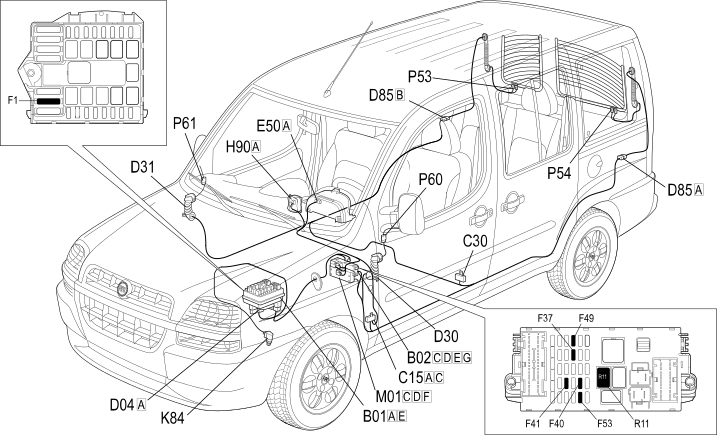

E3030 HEATED REAR WINDSCREEN AND DOOR MIRROR DEFROSTING - LOCATION OF COMPONENTS
- Path
- Electrical equipment > 1 ELECTRICAL FUNCTIONS > E30 ELECTRICALLY ACTIVATED DEVICES > E3030 HEATED REAR WINDSCREEN AND DOOR MIRROR DEFROSTING > E3030 HEATED REAR WINDSCREEN AND DOOR MIRROR DEFROSTING - LOCATION OF COMPONENTS
- Kind
- topic
- Applies to
- engines: 1.2 8v, 1.6 16v, 1.3 JTD 16V, 1.9 JTD 8V, 1.9 DIESEL; production: da 12/03
- Interactive page
- https://sloeber94.github.io/elrnDB-fDbl/en/#/223001917
Applies to: engines: 1.2 8v, 1.6 16v, 1.3 JTD 16V, 1.9 JTD 8V, 1.9 DIESEL; production: da 12/03
Location of components

COMPONENTS
Component code | Name | Assembly reference |
|---|---|---|
Engine compartment junction unit | - | |
Engine compartment junction unit | ||
Engine compartment junction unit | ||
Junction unit under dashboard | - | |
Junction unit under dashboard | ||
Facia earth, driver's side | - | |
Left rear earth | - | |
Front/engine coupling | - | |
Front/engine coupling | ||
Front left door connection | - | |
Front right door connection | - | |
Tailgate rear seal/ | - | |
Tailgate/ rear coupling | - | |
Instrument panel | - | |
Instrument panel | ||
Switch control unit | ||
Speedometer sensor | ||
Body computer | ||
Right heated rear windscreen | ||
Left heated rear windscreen | ||
Left door mirror | ||
Right door mirror |
Topics linked from this page (23)
- 1004B POWER UNIT ASSEMBLY
- 1060G pressure pump electric control
- 2180A milometer control
- 5505A multi-function components
- 5560B analogue control panel
- 7005R front door mirrors
- 7035B rear window
- B001 JUNCTION UNIT
- B002 JUNCTION UNIT UNDER DASHBOARD
- C015 DASHBOARD EARTH, DRIVER'S SIDE
- C30 LEFT REAR EARTH ( REAR )
- D004 FRONT/ENGINE COUPLING
- D30 FRONT LEFT DOOR CONNECTION
- D031 REAR/PASSENGER FRONT DOOR COUPLING
- D085 TAILGATE/REAR SEAL
- E050 INSTRUMENT PANEL
- H090 SWITCH CONTROL UNIT
- K84 SPEEDOMETER SENSOR
- M001 BODY COMPUTER
- P53 RIGHT HEATED REAR WINDSCREEN ( RIGHT DOOR )
- P054 LEFT HEATED REAR WINDSCREEN
- P60 LEFT DOOR MIRROR
- P061 RIGHT DOOR MIRROR